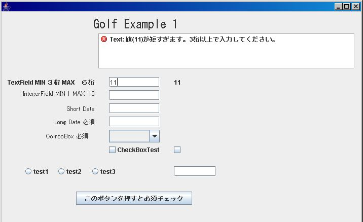
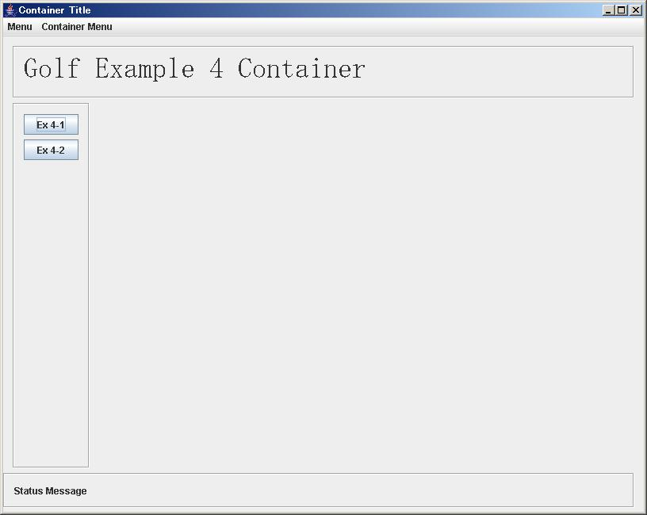

-
Golf Project とは、Seasar ContainerとJGoodiesを利用した、 Rich Client Platformです。
Swingを使い良くするということで、Swingに関係ある 「Golf」 と言う名前にしました。
Version 0.2 に上がりました。
複数のContainer Windows内に、各種画面を MENU経由だけでなく、直接 画面コードを
入力する、Expert Modeにも対応し、Rich Clientの特長を活かした、効率的に入力出来る
業務画面を、JAVA コードを最小限にして作成できます。
画面のモード（例えば、新規・更新・表示）に応じ、各入力 フィールド、ToolBarボタン、
Menu項目の「表示・非表示」「Enable・Disable」「編集可否」をCSV Fileで簡単に指定
できます。
画面のある フィールドに対し、子画面（または Dialog）を使用して、検索した結果を簡単に
埋め込めます。
Server側は、S2Containerを使用した S2RMIを利用することにより、SeasarのHot deploy
機能を活用し、Serverを立ち上げたまま、Transactionの追加・機能の追加が行えます。
（サクサク感のある開発）
Server側とのDataのやりとりは、CSV File（Validator定義のものをそのまま使用）の
host欄の項目と自動的にMappingされます。また、JTableについても同様に、Columnの
Validation定義のCSVの情報を使用して、自動的にMappingできます。
Server側から、Error情報をSetする事により、Client側のError表示 AREAに表示すると
共に、最初のError Fieldに自動的にカーソルが移動する機能もあります。
Server側からの指示により、新たな画面を開いたり、一つ前の画面に戻ったり等の
画面遷移を簡単に指定できます。
IDEが無くても、簡単にDEMOが見られますので、まずDEMOを見て下さい。
Version 0.2 Demo
- １．画面の作成は、Matisse で簡単に、自由にデザイン出来る Netbeans 5.5の使用をお薦めします。（なお、EclipseでのProject設定もしていますので、その後のDicon関連には、EclipseでKijimunaのSupportも可能です）
-
２．Validatorの設定は、Dicon に行い、それと画面のFieldとのMappingを、JAVAだけでなく、「CSV File Excelで編集）」で簡単に行える。 下記は Diconの例。（S2Conatinerの特徴を生かしています。）
- <components>
<component name="min3max6string" class="org.seasar.golf.validator.StringValidator">
<property name="minLength">new Integer(3)</property>
<property name="maxLength">new Integer(6)</property>
</component>
</components>
例えば、一部省略していますが、下記の設定では 「jTextField1」 に、「min3max6string」という名前で、Diconに登録されたValidatorを適用し、 Error Message上に表記には、「Text」 を使用します。
画面に入力した時点では、必須 チェックは行いませんが、 「ENTER」ボタン等を押した場合には、 必須チェックを行います。
この必須指定を Requiredで行います。
Ver 0.1.1 対応 BindingはDefaultでは Focus Lost時に行われ、そのタイミングでValidationされますが、もしファンクション・キー
対応などで、即座にBindingしたい場合は、「Immed」という列を追加し、そこに「T」を入力すると、即座にBindingされます
３．Validationした結果は、画面に定義した、Scroll Paneに即座に自動的に表示されます。

４．JTableを使用する場合は、そのColumn設定とValidationの設定を同様に「CSV File」で簡単に定義出来ます。
- ４．ブラウザでの表示と同様、コンテナ画面にヘッダー領域やフッター領域などの共通領域を 設定しておき、コンテンツ領域に指定した 画面を合成して簡単に表示できます。この場合TITLE, MENUも変更できます。（開発は、通常のJFrame画面の編集で出来ます）
コンテナ画面

- EX 4-1を押した画面 （タイトル、メニュー、コンテンツ画面が反映されています）

Version 0.2追加済み機能
- ログイン後、複数のコンテナ画面を使用出来、それらでセッション情報を共有出来る。
- コンテナ画面のDefaultとして、Menu画面を配置し、Menuを選ぶ事で、同一画面内に該当画面を開く
- どの画面でも、直接 トランザクションコード（画面コード）を入力する事により、メニューに戻らなくても、該当画面に ジャンプ出来る（指定で新たなコンテナ画面を開いてその中にジャンプ
する事も可能）ホストとは、S2Remoting （S2RMI、Ｓ２Ａｘｉｓ等）を利用して、ホストの処理する トランザクションコード（Diconに定義した、Action）に処理を委ねる。
- ホストで処理した結果は、場合により同一画面に単に表示したり、新たな画面を開いて表示したり（WEBアプリケーションの Forwardに該当）、メニューに戻ったり、で指定出来る。
尚上記の機能は、複雑な業務で多くの画面を使用する場合、統一的な効率の良い、ユーザーオペレーションと開発の両立を目指しています。
ド
キュメント
最新版
- Golf V0.2 Server処理に対応した最新Versionです。
アーカイブ版
- Golf V0.1.1 即座Binding対応、複数Validator対応等のVersionです。
- Golf V0.1 Golf の最初のVersionで、Exampleも含まれています。
- JGoodies JGoodiesのサイトです
-
|